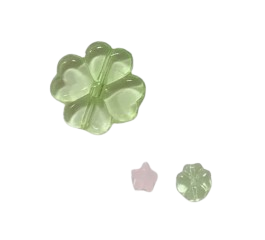

Whether you're studying for AP CSA, exploring computer science for the first time, or looking for extra support, our tutoring initiative provides free resources, review sessions, and opportunities to stay involved in tech!
Review materials, notes, and upcoming review opportunities.
Includes:
Review materials, notes, and upcoming review opportunities.
Includes:
Computer science is no longer just for tech professionals— it's woven into nearly every aspect of our daily lives. From the apps on your phone to the algorithms that recommend your favorite content, understanding computer science helps you navigate, innovate, and thrive in our digital world. But more importantly, tech shapes the future, and that future should include all of us—especially the voices and perspectives of girls and women who've been historically left out of the conversation.
Computer science impacts:
By learning computer science today, you're not just preparing for a tech career—you're developing skills that will make you a better problem-solver, communicator, and innovator. You're also joining a community that believes girls deserve a seat at the table in tech. At Cherielle, we're committed to creating a safe, inclusive space where you can learn, grow, and build confidence in your abilities without feeling undermined or alone. Your perspective matters, and we're here to make sure you know it.
Browse resources outside of tutoring.
Start your computer science journey with foundational concepts and beginner-friendly guides to get you comfortable with coding.
ExploreDive deeper into Java programming and AP Computer Science A concepts with comprehensive materials and practice problems.
ExploreComprehensive study materials, exam guides, and practice resources specifically tailored for the 2026 Edexcel Computer Science IGCSE exam.
Explore